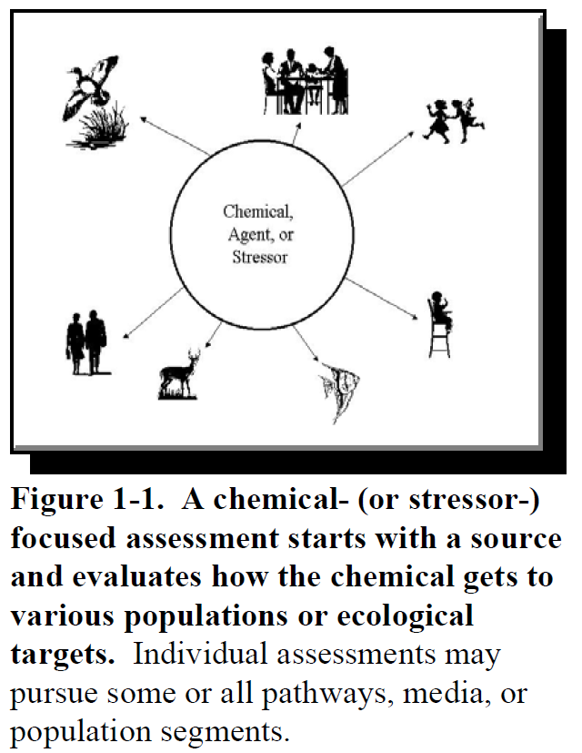
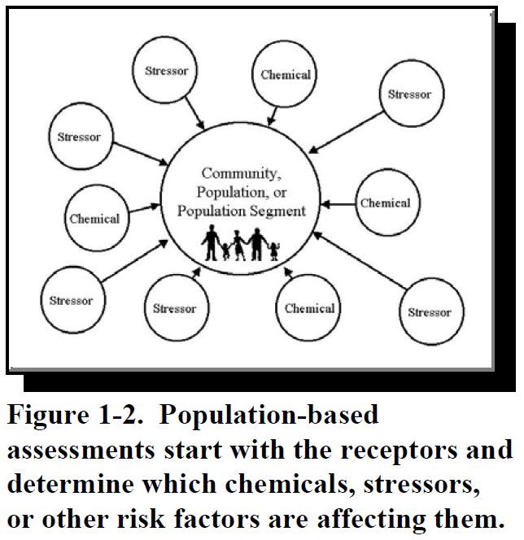

Goals
Troy Abel
Department of Environmental Studies

Critical Thinking
Source: Adapted from the California Academic Press's Learning Outcomes for Writing Proficiency.
| Learning Outcomes | Definition | Course Outcomes |
|---|---|---|
| Identification | Accurately identifies and interprets evidence. | To teach environmental justice concepts, I engage graduate, undergraduate, and high school students with studies that provide evidence on urban pollution disparities. Much of the evidence used by environmental justice scholars is available through government databases. But more recently, we’ve begun collecting primary data with the Cleveland High School collaboration. Students are trained on the use of handheld Particulate Matter (PM) pollution sensors that allow students to crowdsource air and noise quality conditions around their school and neighborhoods. This becomes one line of evidence to help them explore the following question: How healthy is the 98108 neighborhood |
| Alternative Consideration | Considers major alternative points of view. | Most environmental risk approaches focus on one kind of stressor or hazard like a particular toxic air pollutant or one source such as aircraft. The traditional 4 step risk assessment process is then applied with analysts considering: (1) the health problems caused by the singular hazard; (2) the exposure period and extent; (3) the dose-response of different health problems; and (4) the characterization of the hazard’s risk to the exposed population. But in the last decade, an alternative and Cumulative Risk Assessment (CRA) approach has been developed by environmental justice scholars. In this view, a riskscape is conceptualized as the combination of multiple hazards and their sources producing unequal risks for socially vulnerable communities. Figure 1 contrasts these approaches as my students grapple with the limits of scientific risk assessment. Instead of the hazard in the center, CRA puts the community in the center of the analysis and then assesses exposures from multiple-hazards. |
| Accurate Conclusions | Draws warranted, judicious, non-fallacious conclusions. | For their writing proficiency 2 requirement, students in my Science in the Policy Process course draft and redraft an evidence-based argumentative thesis on a topic such as the degree of progress we’ve made on an environmental challenge or the public’s concern over an environmental challenge. |
| Justification | Justifies key results and procedures, and explains assumptions and reasons. | For the argumentative thesis, I evaluate student drafts for thesis structure, evidence marshalled, synthesis, recognition of alternative theses, and source usage. For the latter, students are expected to use course materials and make rhetorical moves based on those sources. |


Source: U.S. EPA. 2003. Framework for Cumulative Risk Assessment. U.S. Environmental Protection Agency, Office of Research and Development, National Center for Environmental Assessment, Washington Office, Washington, DC, EPA/600/P-02/001F
Writing
Source: Adapted from Western Washington University's Learning Outcomes for Writing Proficiency.
| Learning Outcomes | Definition | Course Outcomes |
|---|---|---|
| Rhetorical Knowledge | Focuses on a clear rhetorical purpose and responds appropriately to the needs of varied audiences and situations. | In addition to the argumentative thesis, ENVS 454: Environmental Policy Analysis students grapple with the following three questions related to their audience. Who does an environmental professional serve? Who has and should have influence in a democracy? Is the role of an environmental analyst purely about providing information and recommendations or to also educate stakeholders and the public? |
| Critical Analysis | Develops, examines, situates, and communicates a reasoned perspective clearly to others. | For their policy analysis, students must choose and justify three evaluative criteria and three alternatives appropriate for an organization. Such a multicriteria decision matrix informs a reasoned yet critical perspective on achieving environmentally just solutions. |
| Composing Processes | Understands writing as a recursive process that involves drafting, re-thinking, editing, reconceptualizing. | Both ENVS 305: History & Politics and 450: Science & the Policy Process are writing proficiency l and II courses that instill how writing is rewriting. |
| Convention Knowledge | Uses appropriate conventions for documentation and for surface features such as syntax, grammar, usage, punctuation, and spelling. | Students are required to use the writing and citation style for the American Political Science Association (APSA). |